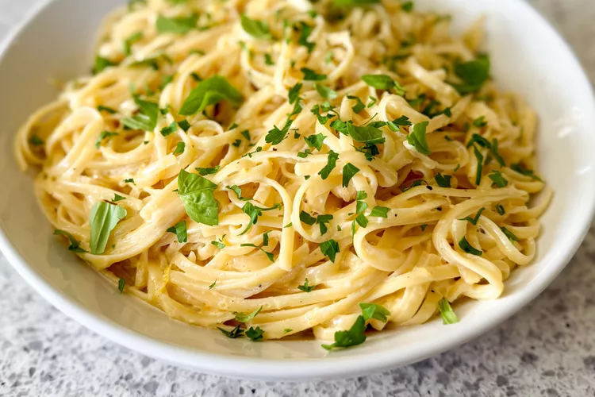
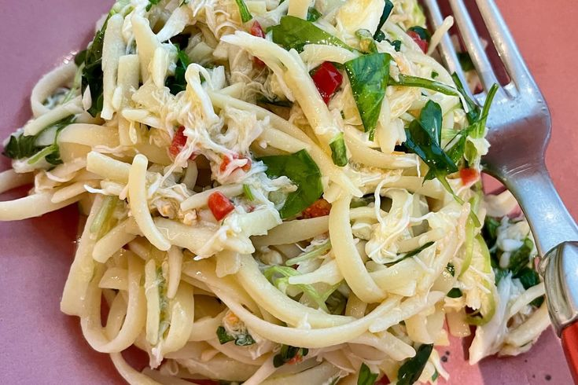
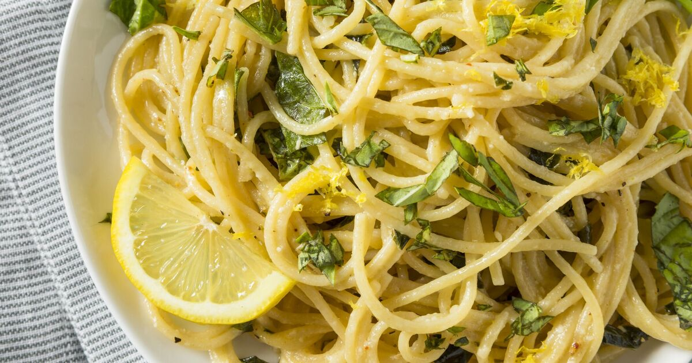

Luscious Linguine
Are you ready to impress your date?
| Portions | Cooking time | Difficulty |
|---|---|---|
| 4 persons | 25 minutes | Easy |
Ingredients
For 4 persons
Cooking method
- Bring a large pot of salted water to a boil. Clean and slice the mushrooms, chop the parsley, mince the garlic, and zest and juice the lemon.
- Cook the linguine according to the package directions. Before draining, reserve a cup of pasta water.
- While the pasta cooks, heat the olive oil in a large pan over medium heat. Add the mushrooms and cook for 5 to 7 minutes, until browned and tender.
- Add the garlic and lemon zest to the pan. Cook for about 30 seconds, stirring, then add the lemon juice.
- Add the drained linguine to the pan and toss to coat. Add a splash of reserved pasta water if needed.
- Stir in the parsley and grated Parmesan. Season with salt and pepper to taste, then serve.
Serving suggestions

With crab and fresh herbs
Serving suggestions

With lemon and parmesan